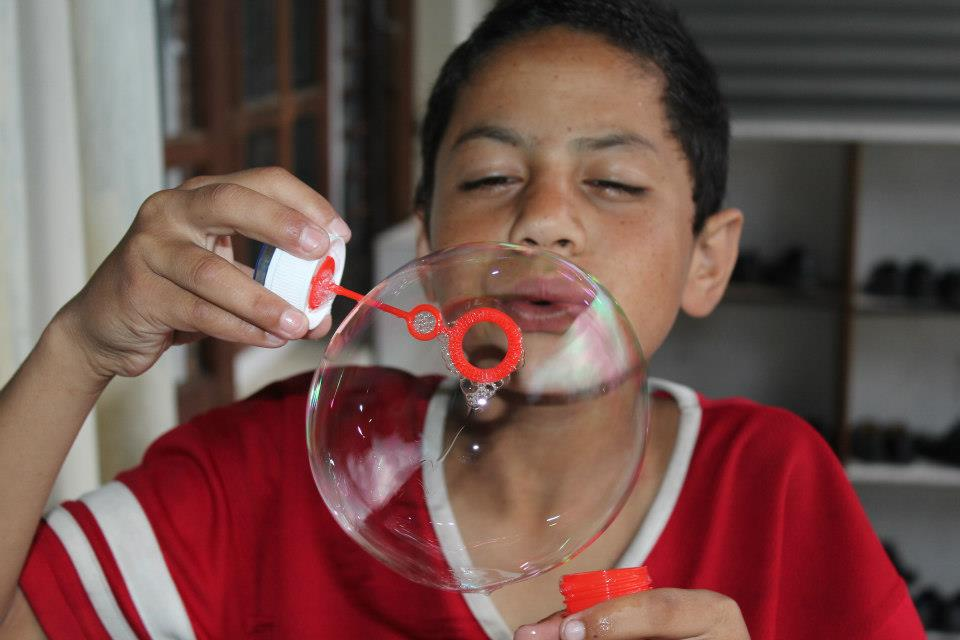

Volunteering
- As volunteer work you can choose to teach English, Math, Science, Computer courses or any special teaching of your own choice.
- You can also introduce kids with your creative arts, games, singing and dancing.
- Tutoring and helping with homework.
- You can always go get a permission to teach in school where the kids are enrolled.
Contact us
|
Accomodation
- Two double bed rooms are available at the Spark.
- Breakfast, lunch and dinner is provided.
- Free Wi-Fi Internet access.
- Nice restaurants are in a walking distance.
- Luxurious rooms are also available in a walking distance (price range for luxurious room $10-$15 per night)
- Extra excursions such as Everest Trekking, Annapurna Trekking, Chitwan Safari, Bungie Jumping, Rafting and trip to Pokhara can be arranged.
|
Latest Project
The funding for this web site runs out in a month, so we are trying to raise money, to keep it alive, and therefore we would appreciate any donation. This website is NOW sponsored by Rya Jonski Hutchings
- Our latest project, is to set up a computer lab for the children of Spark. That way, we can also hire college graduate students, to help the children improve their computer skills.
We want to provide the children with new school uniforms, since they need new ones, as the ones they presently wear, need renewal. Thanks for all the support, new uniforms have been renewed.
- We want to establish our own vegetable garden, and grow our own food. We think as this as a good project, in order to provide the children with the knowledge and understanding of planting things and watch them grow
|